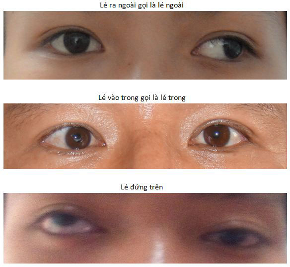
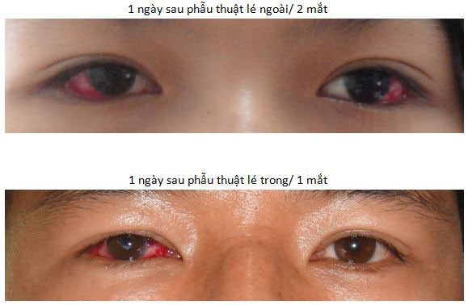

Bệnh lé (bệnh lác) mắt nguyên nhân và cách điều trị
Bệnh mắt lé là gì?
Bệnh lé hay còn gọi là bệnh lác, là tình trạng hai mắt không thẳng hàng ở tư thế
nguyên phát (nhìn thẳng về phía trước) một mắt lệch so với mắt còn lại. Tùy theo cơ
bị ảnh hưởng mà mắt lé có thể

Nguyên nhân gây lé và ai có thể bị lé?
Mắt có 6 cơ vận nhãn: 4 cơ trực và 2 cơ chéo bám xung quanh giúp mắt liếc các hướng.
Lé xảy ra khi có sự mất cân bằng giữa các cơ vận nhãn do cơ hay thần kinh chi phối
cho cơ. Lé có thể xảy ra ở mọi lứa tuổi.
– Lé bẩm sinh là khi trẻ sinh ra đã thấy lé hay lé xuất hiện trong giai đoạn từ 6
tháng tuổi. Lé thứ phát thường xảy ra ở người lớn do bệnh lý toàn thân (Basedow,
u…), tại mắt (đục thể thủy tinh, bất đồng khúc xạ, bệnh lý đáy mắt..), chấn thương
vùng đầu mặt, phẫu thuật các bệnh lý ở mắt (Glaucoma, ấn độn…).
– Lé do yếu tố điều tiết qui tụ, xảy ra trong độ tuổi đến trường do tật khúc xạ viễn
thị hay cận thị.
– Lé do yếu tố di truyền chưa được khẳng định.
Tác hại của bệnh lé?
Tác hại nghiêm trọng nếu lé xảy ra ở trẻ em đang trong giai đoạn phát triển thị giác,
có thể gây mất thị lực ở mắt lé (hay còn gọi là nhược thị). Mất khả năng nhận thức
chiều sâu (thị giác 2 mắt) – khả năng canh khoảng cách kém giữa 2 vật; dễ bước hụt
chân cầu thang.
Giảm thị trường quan sát ở một mắt. Một số nghề nghiệp sau này đòi hỏi thị giác hai
mắt tốt (lắp ráp máy móc, dùng kính hiển vi, vận động viên thể thao…). Vì vậy nên
đưa trẻ đi khám ở cơ sở có chuyên khoa lé ngay khi phát hiện trẻ có lé.
Triệu chứng của bệnh lé
– Triệu chứng thực thể: lé rất dễ nhận biết
khi tự soi gương hay người xung quanh phát hiện thấy mắt lệch. Đối với những trường
hợp lé ẩn thì khám chuyên khoa mới phát hiện được.
– Triệu chứng chủ quan
+ Mỏi mắt thường xuyên, khả năng tập trung kém.
+ Hậu đậu, đi lại hay vấp té, làm việc không chính xác bằng người bình thường.
+ Mắt lé thường xuyên có thể mờ hơn mắt không lé. Tư thế nghiêng đầu thích nghi với
tình trạng lé
+ Song thị (hai hình) nếu lé xảy ra đột ngột ở người có chức năng thị giác đã hoàn
thiện -> cần đi khám chuyên khoa để loại trừ những bệnh lý cấp tính hệ thần kinh TW.
Điều trị bệnh lé
Mục tiêu điều trị
+ Ở trẻ < 6 tuổi & trẻ đi học : bảo toàn chức năng hợp thị hai mắt và ngăn ngừa mù
mắt lé
+ Ở trẻ < 6 t+ Ở người trưởng thành: chỉnh lé chỉ có mục đích thẩm mĩ.
Ngoại trừ một số trường hợp lé cấp là phục hồi chức năng hợp thị.
Các phương pháp điều trị lé
Tùy theo từng trường hợp lé, sẽ áp dụng một hoặc kết hợp các phương
pháp sau:
+ Tập qui tụ, tập liếc sang hướng ngược chiều lé.
+ Đeo kính khi lé do quy tụ điều tiết hay kèm tật khúc xạ.
Ở người lớn lé gây song thị độ nhỏ có thể mang lăng kính.
+ Che mắt khi mắt lé bị nhược thị.
+ Phẫu thuật: là điều chỉnh các cơ vận nhãn nhằm đưa 2 mắt về thẳng
trục.
+ Tiêm thuốc (Botulium toxin):
Trường hợp lé thứ phát ở người lớn do liệt cơ vận nhãn trong thời
gian chờ đợi phẫu thuật để giải quyết tạm thời tình trạng song thị.
Những câu hỏi thường gặp về bệnh lé
– Trẻ bao nhiêu tuổi có thể khám lé
được? Trẻ có lé mắt > 6 tháng tuổi, khám ở cơ sở chuyên
khoa Mắt có phòng khám lé
– Tuổi nào có chỉ định phẫu thuật
chỉnh lé? Chỉ định mổ lé sớm hay muộn tùy thuộc vào mức
độ tổn hại chức năng thị giác 2 mắt và dạng lé. Ở Việt Nam, phẫu
thuật cho trẻ sớm nhất từ 18 đến 22 tháng tuổi ở cơ sở có phương
tiện gây mê hồi sức tốt.
– Mổ lé có nguy hiểm không?
+ Phẫu thuật lé không ảnh hưởng thị lực trước đó của bệnh nhân.
+ Các biến chứng do mổ có thể như tụ máu gây đỏ mắt, sưng phù kết
mạc (lòng trắng mắt) hoặc mi mắt. Những biến chứng này có thể điều
trị hết mà không để lại di chứng.
– Mổ một mắt hay hai mắt?
Tùy trường hợp cụ thể, bác sĩ sẽ tư vấn cho bệnh nhân để có kết quả
tốt nhất có thể.
– Sau mổ lé có tái phát không?
Những trường hợp lé không do bệnh lý (Basedow, mất thị lực)
thì sau mổ lé sẽ hết lé, nhiều trường hợp độ lé cao cần mổ 2 lần mới
hết lé.
– – Mổ lé có đau không? Mổ
lé không đau vì chỉ nhỏ và bơm thuốc tê vào cạnh mắt. Sau mổ, khi
thuốc tê hết tác dụng bệnh nhân nên uống thuốc giảm đau bác sĩ đã kê
toa.
– – Mổ lé có phải nằm viện
không? thời gian mổ bao lâu? Bệnh nhân có thể ra về ngay
sau cuộc mổ. Tái khám sau phẫu thuật: 1 ngày – 1 tháng – 3 tháng – 6
tháng – 1 năm. Thời gian phẫu thuật khoảng 20-40 phút.
– Sau mổ lé có phải cắt chỉ không?
Sử dụng chỉ tự tiêu nên không cần cắt chỉ.
– Sau mổ bao lâu có thể làm việc
bình thường? Bệnh nhân cần nghỉ ngơi ít nhất 1 ngày sau
phẫu thuật. Mắt sẽ đỏ trong khoảng 1 tuần đến 10 ngày sau mổ.

Bệnh viện mắt Sài Gòn
BS. Lê Thục Nhi